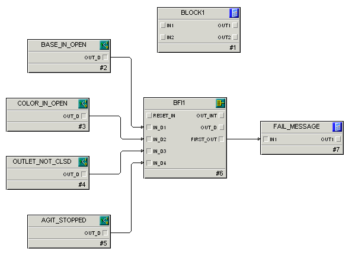

Creating the logic to monitor phase conditions
The diagram below shows the initial Fail_Monitor block, BLOCK1, and the blocks we will add to monitor the failure conditions.

Each of the four condition blocks is used to define the expression for a failure condition. If the condition becomes TRUE, then the OUT_D parameter of that block is set to TRUE as well. By wiring all of the OUT_D parameters into the Boolean Fan In block, we can watch for any failure condition to become active. The Boolean Fan In block makes three decisions that are extremely useful in monitoring for failure conditions. It tells us if any condition is active (OUT_D), it identifies which conditions are active (OUT_INT), and it identifies which condition became active first (FIRST_OUT).
Using the FIRST_OUT parameter and the phase_failures named set, we can display the appropriate message to the operator to describe why the phase has failed. This is done by determining which message to display (in the FAIL_MESSAGE calc/logic block) and writing the correct message to the FAIL_INDEX parameter (in the BLOCK1 calc/logic block).
The FAIL_INDEX parameter is the heart of the failure monitoring system. All phases are designed such that if the FAIL_INDEX parameter for that phase is anything other than 0, then the phase automatically transitions from the running logic to the holding logic. Additionally, the value of the FAIL_INDEX parameter is displayed both on the Batch Operator Interface as well as the detail display on the unit phase faceplate as the Failure State message.
We will add four condition blocks that feed into a Boolean Fan In (BFI) block. When a condition is tripped, the following things happen:
- The failure is detected and sent to the BFI block. The value of the FIRST_OUT parameter of the BFI is sent to the Calc/Logic block named FAIL_MESSAGE.
- The FAIL_MESSAGE block converts the FIRST_OUT value to one of the failures defined in the phase_failures named set.
- The FAIL_MESSAGE parameter OUT1 is used to set the FAIL_INDEX parameter in the phase.
- When the FAIL_INDEX parameter is non-zero, the phase goes to the holding state and the appropriate phase_failures named state string is displayed in the Batch Operator Interface (as well as in the details display on the unit phase faceplate).